實驗室簡介
火星物種孵化實驗室是一個長期致力於在地球孵化火星物種的研究機構,其孵化火星物種的目的是為了在人類登上火星之前所進行關於精神層面的事前測試與準備,人類該以何種心境來面對與地球迥異的火星地景、物質和生命為該實驗室的研究宗旨。長久以來,實驗室的研究員利用科學、文化和媒體的手段,在不同時期孵化出各具特色的火星物種,並透過這些特色物種來推測火星的狀態,以及提供人類不同看待火星的觀點。當實驗室的首席研究員帕西瓦爾·羅威爾(Percival Lowell)於1897年透過望遠鏡在火星上觀測到人造運河後,火星物種孵化實驗室正式成立,羅威爾的發現帶給其他研究員許多孵化火星物種的靈感,紛紛使用不同科技進行孵化,至此之後,火星物種經歷了幾波特性上的孵化演進,從原先的宗教神性到後來的高等善良,漸漸地轉變為殘忍無情,以致於到後來具侵略性的殖民,然而本實驗室相信「想像力能影響現實」,故越來越能在當前人類對於火星所規劃的未來藍圖中看見人類乘載了過往高科技火星物種的殖民意圖,人類即將成為自己孵化的火星物種;然而根據過往實驗室所孵化的物種樣本看來,具有侵略和剝削性的火星物種多半皆以滅絕收場,這樣的結果似乎預示著目前人類所擘劃的火星未來並不樂觀,故本實驗室認為人類必需在未來踏上火星前,孵化出更具多樣性和包容性的火星物種,以探索我們看待火星的心態和意圖,並藉此重塑人類自身與火星的關係。
在對於物種孵化方式進行通盤檢討過後,研究員發現過往所孵化的火星物種都有一個共通的盲點-即是這些物種都是研究員單向地投射他們對於火星的想法,如此主導式的孵化方法卻侷限了人們自行去探索自身看待火星的方式,而錯失了許多與火星建立關係的其他可能性。針對人類該以何種態度來面對火星的研究宗旨,實驗室認為不同個體對於火星所投射的內在意識才是當前最需要去探索協調的部分,而非實驗室研究員概括片面的想法。為了從個體意識出發以孵化出更多元的火星物種,本實驗室開發出了一套向內宇宙尋找內星智慧的方法(Search for Intraterrestrial Intelligence),這套方法將需要招募更多物種孵化員的加入,所要孵化的並非物種的軀體樣態,而是與孵化員自身具有連結性的火星意識體,期望藉此開展每位孵化員自身與火星在靈性上的連結可能。


 
